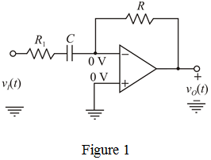

Refer to op-amp differentiator circuit in Figure 2.27 (a) in the textbook.
Write the expression for the time constant.
Substitute for and 10 nF for  in the equation.
in the equation.
Therefore, the value of resistance,  is
is  .
.
Refer to op-amp differentiator circuit in Figure 2.27 (a) in the textbook.
Write the expression for the time constant.
Substitute for and 10 nF for in the equation.
Therefore, the value of resistance, is .
Write the expression for gain of an active differentiator.
Substitute  for
for  in the equation.
in the equation.
At any frequency, the phase shift is .
Unity gain is obtained when, .
Calculate the unity gain frequency.
Therefore, the unity-gain frequency, is .
Find the frequency for one-tenth of the unity-gain frequency.
Substitute for in the equation.
Calculate the gain of differentiator circuit at one-tenth of the unity-gain frequency.
Therefore, the gain of the differentiator at one-tenth of unity-gain frequency is .
Find the frequency for ten times of the unity-gain frequency.
Substitute for in the equation.
Calculate the gain of differentiator circuit at ten times of the unity-gain frequency.
Therefore, the gain of the differentiator at ten times of unity-gain frequency is .
A series input resistance is added to the differentiator circuit, the modified circuit is shown in Figure 1.

The Magnitude of this amplifier is,
Substitute for and  for
for  in the equation.
in the equation.
Therefore, the input resistance,  of new differentiator is .
of new differentiator is .
Calculate the 3-dB frequency of new differentiator.
Therefore, the 3-dB frequency,  of the new differentiator is .
of the new differentiator is .
Calculate the transfer function of new differentiator circuit.
Substitute  for in the equation.
for in the equation.
Substitute  for
for  ,
,  for
for  , 10 nF for
, 10 nF for  , and for
, and for  in the equation.
in the equation.
Therefore, the voltage gain of the new differentiator at is .
Calculate the Phase shift of the new differentiator at .
Substitute  for
for  , 10 nF for
, 10 nF for  , and for
, and for  in the equation.
in the equation.
Therefore, the phase shift,  of the new differentiator at
of the new differentiator at  is .
is .